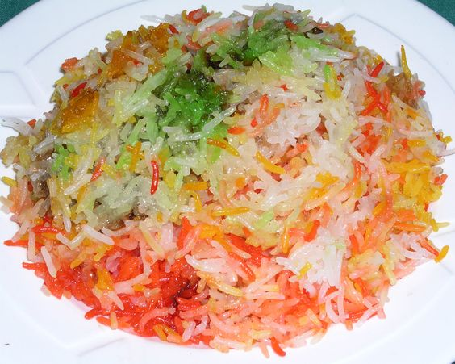

Ingredients
1.Basmati Rice – 1 cup
2.Hot Water – 1 1/2 cup
3.Milk - 3/4 cup
4.Sugar – 3/4 cup
5.Saffron – a pinch
6.Nuts (Cashews, Almonds etc) - handful
7.Dry Fruits (Raisins, dried cranberries etc) – handful
8.Coconut pieces (or dessicated coconut) - 2 tblsp
9.Ghee/ Butter – 2 tblsp
10.Orange Zest – 1/2 tsp
11.Cardamom Powder – 1/4 tsp
12.Kesari Powder/ Orange food colour - a pinch
13.Paneer/ Khoya - 2 tblsp
Method
1. Wash the rice, soak it for 15-20 minutes and drain the water
completely.
2. Add the saffron strands and sugar to the milk. Microwave for
a minute let it soak while you get the other things done.
3. Heat the ghee/butter in a pan and fry the nuts and dry fruits
on low heat.
4. After the nuts turn golden brown and the dry fruits plump up,
add the coconut pieces and drained rice.
5. Fry this in the same oil till a nice aroma comes.
6. Add the hot water, kesari powder and orange zest to this.
7. Reduce the flame, cover with a lid and let it cook for 10
minutes. You can also cook everything in a rice cooker.
8. After the rice is 3/4th cooked, add the sweetened milk with
saffron strands and cardomom powder.
9. Cover with the lid again and let it cook on very low heat for
another 10-15 minutes.
10. By now all the liquid would have been absorbed by the rice
and the rice will be fully cooked.
11. Fluff up the rice gently with a fork and switch off. Garnish
with grated paneer/khoya and serve.